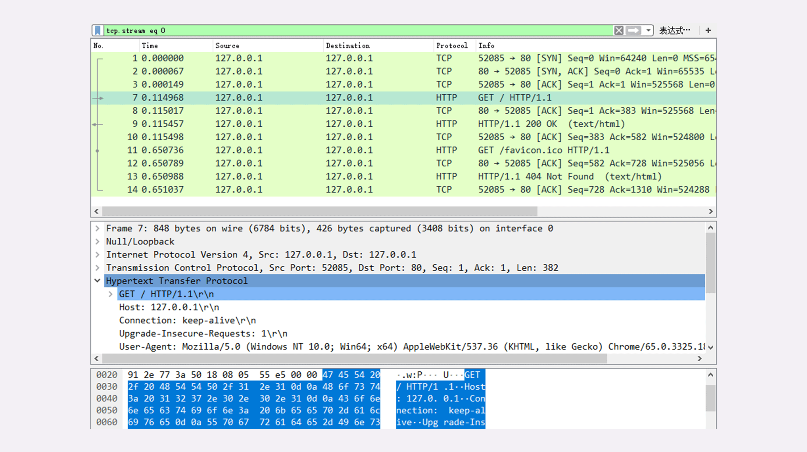

- 00 开篇词｜To Be a HTTP Hero.md.html
- 01 时势与英雄：HTTP的前世今生.md.html
- 02 HTTP是什么？HTTP又不是什么？.md.html
- 03 HTTP世界全览（上）：与HTTP相关的各种概念.md.html
- 04 HTTP世界全览（下）：与HTTP相关的各种协议.md.html
- 05 常说的“四层”和“七层”到底是什么？“五层”“六层”哪去了？.md.html
- 06 域名里有哪些门道？.md.html
- 07 自己动手，搭建HTTP实验环境.md.html
- 08 键入网址再按下回车，后面究竟发生了什么？.md.html
- 09 HTTP报文是什么样子的？.md.html
- 10 应该如何理解请求方法？.md.html
- 11 你能写出正确的网址吗？.md.html
- 12 响应状态码该怎么用？.md.html
- 13 HTTP有哪些特点？.md.html
- 14 HTTP有哪些优点？又有哪些缺点？.md.html
- 15 海纳百川：HTTP的实体数据.md.html
- 16 把大象装进冰箱：HTTP传输大文件的方法.md.html
- 17 排队也要讲效率：HTTP的连接管理.md.html
- 18 四通八达：HTTP的重定向和跳转.md.html
- 19 让我知道你是谁：HTTP的Cookie机制.md.html
- 20 生鲜速递：HTTP的缓存控制.md.html
- 21 良心中间商：HTTP的代理服务.md.html
- 22 冷链周转：HTTP的缓存代理.md.html
- 23 HTTPS是什么？SSLTLS又是什么？.md.html
- 24 固若金汤的根本（上）：对称加密与非对称加密.md.html
- 25 固若金汤的根本（下）：数字签名与证书.md.html
- 26 信任始于握手：TLS1.2连接过程解析.md.html
- 27 更好更快的握手：TLS1.3特性解析.md.html
- 28 连接太慢该怎么办：HTTPS的优化.md.html
- 29 我应该迁移到HTTPS吗？.md.html
- 30 时代之风（上）：HTTP2特性概览.md.html
- 31 时代之风（下）：HTTP2内核剖析.md.html
- 32 未来之路：HTTP3展望.md.html
- 33 我应该迁移到HTTP2吗？.md.html
- 34 Nginx：高性能的Web服务器.md.html
- 35 OpenResty：更灵活的Web服务器.md.html
- 36 WAF：保护我们的网络服务.md.html
- 37 CDN：加速我们的网络服务.md.html
- 38 WebSocket：沙盒里的TCP.md.html
- 39 HTTP性能优化面面观（上）.md.html
- 40 HTTP性能优化面面观（下）.md.html
- 结束语 做兴趣使然的Hero.md.html
- 捐赠
08 键入网址再按下回车，后面究竟发生了什么？
经过上一讲的学习，你是否已经在自己的电脑上搭建好了“最小化”的 HTTP 实验环境呢？
我相信你的答案一定是“Yes”，那么，让我们立刻开始“螺蛳壳里做道场”，在这个实验环境里看一下 HTTP 协议工作的全过程。
使用 IP 地址访问 Web 服务器
首先我们运行 www 目录下的“start”批处理程序，启动本机的 OpenResty 服务器，启动后可以用“list”批处理确认服务是否正常运行。
然后我们打开 Wireshark，选择“HTTP TCP port(80)”过滤器，再鼠标双击“Npcap loopback Adapter”，开始抓取本机 127.0.0.1 地址上的网络数据。
第三步，在 Chrome 浏览器的地址栏里输入http://127.0.0.1/，再按下回车键，等欢迎页面显示出来后 Wireshark 里就会有捕获的数据包，如下图所示。

如果你还没有搭好实验环境，或者捕获与本文里的不一致也没关系。我把这次捕获的数据存成了 pcap 包，文件名是“08-1”，放到了 GitHub 上，你可以下载到本地后再用 Wireshark 打开，完全精确“重放”刚才的 HTTP 传输过程。
抓包分析
在 Wireshark 里你可以看到，这次一共抓到了 11 个包（这里用了滤包功能，滤掉了 3 个包，原本是 14 个包），耗时 0.65 秒，下面我们就来一起分析一下”键入网址按下回车”后数据传输的全过程。
通过前面“破冰篇”的讲解，你应该知道 HTTP 协议是运行在 TCP/IP 基础上的，依靠 TCP/IP 协议来实现数据的可靠传输。所以浏览器要用 HTTP 协议收发数据，首先要做的就是建立 TCP 连接。
因为我们在地址栏里直接输入了 IP 地址“127.0.0.1”，而 Web 服务器的默认端口是 80，所以浏览器就要依照 TCP 协议的规范，使用“三次握手”建立与 Web 服务器的连接。
对应到 Wireshark 里，就是最开始的三个抓包，浏览器使用的端口是 52085，服务器使用的端口是 80，经过 SYN、SYN/ACK、ACK 的三个包之后，浏览器与服务器的 TCP 连接就建立起来了。
有了可靠的 TCP 连接通道后，HTTP 协议就可以开始工作了。于是，浏览器按照 HTTP 协议规定的格式，通过 TCP 发送了一个“GET / HTTP/1.1”请求报文，也就是 Wireshark 里的第四个包。至于包的内容具体是什么现在先不用管，我们下一讲再说。
随后，Web 服务器回复了第五个包，在 TCP 协议层面确认：“刚才的报文我已经收到了”，不过这个 TCP 包 HTTP 协议是看不见的。
Web 服务器收到报文后在内部就要处理这个请求。同样也是依据 HTTP 协议的规定，解析报文，看看浏览器发送这个请求想要干什么。
它一看，原来是要求获取根目录下的默认文件，好吧，那我就从磁盘上把那个文件全读出来，再拼成符合 HTTP 格式的报文，发回去吧。这就是 Wireshark 里的第六个包“HTTP/1.1 200 OK”，底层走的还是 TCP 协议。
同样的，浏览器也要给服务器回复一个 TCP 的 ACK 确认，“你的响应报文收到了，多谢。”，即第七个包。
这时浏览器就收到了响应数据，但里面是什么呢？所以也要解析报文。一看，服务器给我的是个 HTML 文件，好，那我就调用排版引擎、JavaScript 引擎等等处理一下，然后在浏览器窗口里展现出了欢迎页面。
这之后还有两个来回，共四个包，重复了相同的步骤。这是浏览器自动请求了作为网站图标的“favicon.ico”文件，与我们输入的网址无关。但因为我们的实验环境没有这个文件，所以服务器在硬盘上找不到，返回了一个“404 Not Found”。
至此，“键入网址再按下回车”的全过程就结束了。
我为这个过程画了一个交互图，你可以对照着看一下。不过要提醒你，图里 TCP 关闭连接的“四次挥手”在抓包里没有出现，这是因为 HTTP/1.1 长连接特性，默认不会立即关闭连接。

再简要叙述一下这次最简单的浏览器 HTTP 请求过程：
- 浏览器从地址栏的输入中获得服务器的 IP 地址和端口号；
- 浏览器用 TCP 的三次握手与服务器建立连接；
- 浏览器向服务器发送拼好的报文；
- 服务器收到报文后处理请求，同样拼好报文再发给浏览器；
- 浏览器解析报文，渲染输出页面。
使用域名访问 Web 服务器
刚才我们是在浏览器地址栏里直接输入 IP 地址，但绝大多数情况下，我们是不知道服务器 IP 地址的，使用的是域名，那么改用域名后这个过程会有什么不同吗？
还是实际动手试一下吧，把地址栏的输入改成“http://www.Chrono.com”，重复 Wireshark 抓包过程，你会发现，好像没有什么不同，浏览器上同样显示出了欢迎界面，抓到的包也同样是 11 个：先是三次握手，然后是两次 HTTP 传输。
这里就出现了一个问题：浏览器是如何从网址里知道“www.Chrono（加微信：642945106 发送“赠送”领取赠送精品课程 发数字“2”获取众筹列表。）.com”的 IP 地址就是“127.0.0.1”的呢？
还记得我们之前讲过的 DNS 知识吗？浏览器看到了网址里的“www.Chrono（加微信：642945106 发送“赠送”领取赠送精品课程 发数字“2”获取众筹列表。）.com”，发现它不是数字形式的 IP 地址，那就肯定是域名了，于是就会发起域名解析动作，通过访问一系列的域名解析服务器，试图把这个域名翻译成 TCP/IP 协议里的 IP 地址。
不过因为域名解析的全过程实在是太复杂了，如果每一个域名都要大费周折地去网上查一下，那我们上网肯定会慢得受不了。
所以，在域名解析的过程中会有多级的缓存，浏览器首先看一下自己的缓存里有没有，如果没有就向操作系统的缓存要，还没有就检查本机域名解析文件 hosts，也就是上一讲中我们修改的“C:\WINDOWS\system32\drivers\etc\hosts”。
刚好，里面有一行映射关系“127.0.0.1 www.Chrono（加微信：642945106 发送“赠送”领取赠送精品课程 发数字“2”获取众筹列表。）.com”，于是浏览器就知道了域名对应的 IP 地址，就可以愉快地建立 TCP 连接发送 HTTP 请求了。
我把这个过程也画出了一张图，但省略了 TCP/IP 协议的交互部分，里面的浏览器多出了一个访问 hosts 文件的动作，也就是本机的 DNS 解析。
真实的网络世界
通过上面两个在“最小化”环境里的实验，你是否已经对 HTTP 协议的工作流程有了基本的认识呢？
第一个实验是最简单的场景，只有两个角色：浏览器和服务器，浏览器可以直接用 IP 地址找到服务器，两者直接建立 TCP 连接后发送 HTTP 报文通信。
第二个实验在浏览器和服务器之外增加了一个 DNS 的角色，浏览器不知道服务器的 IP 地址，所以必须要借助 DNS 的域名解析功能得到服务器的 IP 地址，然后才能与服务器通信。
真实的互联网世界要比这两个场景要复杂的多，我利用下面的这张图来做一个详细的说明。

如果你用的是电脑台式机，那么你可能会使用带水晶头的双绞线连上网口，由交换机接入固定网络。如果你用的是手机、平板电脑，那么你可能会通过蜂窝网络、WiFi，由电信基站、无线热点接入移动网络。
接入网络的同时，网络运行商会给你的设备分配一个 IP 地址，这个地址可能是静态分配的，也可能是动态分配的。静态 IP 就始终不变，而动态 IP 可能你下次上网就变了。
假设你要访问的是 Apple 网站，显然你是不知道它的真实 IP 地址的，在浏览器里只能使用域名“www.apple.com”访问，那么接下来要做的必然是域名解析。这就要用 DNS 协议开始从操作系统、本地 DNS、根 DNS、顶级 DNS、权威 DNS 的层层解析，当然这中间有缓存，可能不会费太多时间就能拿到结果。
别忘了互联网上还有另外一个重要的角色 CDN，它也会在 DNS 的解析过程中“插上一脚”。DNS 解析可能会给出 CDN 服务器的 IP 地址，这样你拿到的就会是 CDN 服务器而不是目标网站的实际地址。
因为 CDN 会缓存网站的大部分资源，比如图片、CSS 样式表，所以有的 HTTP 请求就不需要再发到 Apple，CDN 就可以直接响应你的请求，把数据发给你。
由 PHP、Java 等后台服务动态生成的页面属于“动态资源”，CDN 无法缓存，只能从目标网站获取。于是你发出的 HTTP 请求就要开始在互联网上的“漫长跋涉”，经过无数的路由器、网关、代理，最后到达目的地。
目标网站的服务器对外表现的是一个 IP 地址，但为了能够扛住高并发，在内部也是一套复杂的架构。通常在入口是负载均衡设备，例如四层的 LVS 或者七层的 Nginx，在后面是许多的服务器，构成一个更强更稳定的集群。
负载均衡设备会先访问系统里的缓存服务器，通常有 memory 级缓存 Redis 和 disk 级缓存 Varnish，它们的作用与 CDN 类似，不过是工作在内部网络里，把最频繁访问的数据缓存几秒钟或几分钟，减轻后端应用服务器的压力。
如果缓存服务器里也没有，那么负载均衡设备就要把请求转发给应用服务器了。这里就是各种开发框架大显神通的地方了，例如 Java 的 Tomcat/Netty/Jetty，Python 的 Django，还有 PHP、Node.js、Golang 等等。它们又会再访问后面的 MySQL、PostgreSQL、MongoDB 等数据库服务，实现用户登录、商品查询、购物下单、扣款支付等业务操作，然后把执行的结果返回给负载均衡设备，同时也可能给缓存服务器里也放一份。
应用服务器的输出到了负载均衡设备这里，请求的处理就算是完成了，就要按照原路再走回去，还是要经过许多的路由器、网关、代理。如果这个资源允许缓存，那么经过 CDN 的时候它也会做缓存，这样下次同样的请求就不会到达源站了。
最后网站的响应数据回到了你的设备，它可能是 HTML、JSON、图片或者其他格式的数据，需要由浏览器解析处理才能显示出来，如果数据里面还有超链接，指向别的资源，那么就又要重走一遍整个流程，直到所有的资源都下载完。
小结
今天我们在本机的环境里做了两个简单的实验，学习了 HTTP 协议请求 - 应答的全过程，在这里做一个小结。
- HTTP 协议基于底层的 TCP/IP 协议，所以必须要用 IP 地址建立连接；
- 如果不知道 IP 地址，就要用 DNS 协议去解析得到 IP 地址，否则就会连接失败；
- 建立 TCP 连接后会顺序收发数据，请求方和应答方都必须依据 HTTP 规范构建和解析报文；
- 为了减少响应时间，整个过程中的每一个环节都会有缓存，能够实现“短路”操作；
- 虽然现实中的 HTTP 传输过程非常复杂，但理论上仍然可以简化成实验里的“两点”模型。
课下作业
- 你能试着解释一下在浏览器里点击页面链接后发生了哪些事情吗？
- 这一节课里讲的都是正常的请求处理流程，如果是一个不存在的域名，那么浏览器的工作流程会是怎么样的呢？
欢迎你把自己的答案写在留言区，与我和其他同学一起讨论。如果你觉得有所收获，也欢迎把文章分享给你的朋友。
© 2019 - 2023 Liangliang Lee. Powered by gin and hexo-theme-book.